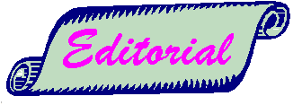
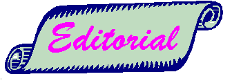

La "sympathique anarchie" qui règne sur Internet
ne l'a pas empêché de devenir un outil indispensable
au chercheur. A côté des avantages évidents
que ce système apporte en ce qui concerne la facilité
et la rapidité des communications, il faut reconnaître
que c'est un redoutable instrument d'intrusion dont on ne se méfie
généralement pas assez. Les problèmes de
sécurité et de confidentialité ne pouvant
pas, légalement, se résoudre dans tous les cas par
l'emploi de la cryptologie, il faut que chaque utilisateur prenne
conscience des risques qu'il court en communiquant par missive
non cachetée et en confiant ses travaux à des fichiers
sans verrou.
En outre, dans le domaine proprement scientifique, comme dans
celui de la gestion, les entités du CNRS qui créent,
administrent ou alimentent des bases de données de quelque
nature que ce soit doivent entreprendre sans délai une
réflexion sur l'adéquation des conditions d'accès
à la nature et à la sensibilité des informations
qu'on y trouve.
Mais la sécurité du système d'information
ne concerne pas que les réseaux. L'utilisateur isolé
n'est pas à l'abri du vol, de la perte ou de l'altération
de ses données, que ce soit par insouciance de sa part
ou du fait de la malveillance d'autrui. Aussi, chacun, à
son niveau, doit-il se sentir concerné par l'effort commun
pour rendre notre système d'informations plus sûr.
C'est pourquoi les actions initiées en 1994 seront poursuivies
et intensifiées en liaison avec nos partenaires de l'Enseignement
supérieur.
Guy Aubert
Directeur Général du CNRS

|
|
Le virus qui grattait la disquette
|
- Docteur, j'ai la disquette qui gratte.
- ???
- Oui, lorsque j'utilise sur mon PC mon traitement de texte préféré,
Word 6 de Monsieur Microsoft, et que j'ouvre un fichier situé
sur mon disque dur, la petite lampe du lecteur de disquette s'allume
et, qu'il y ait ou non une disquette présente, ça
essaie de lire (ou d'écrire ?).
- D'autres symptômes ?
- Pour tout vous dire, il arrive parfois, quand j'allume ma machine,
que l'écran se remplisse d'un même caractère
ressemblant à un E majuscule arrondi.
- Ah, je vois ! N'utiliseriez-vous pas un logiciel... disons :
"emprunté pour évaluation" ?
- Que nenni, Docteur, je suis un utilisateur honnête et
voici d'ailleurs la preuve que je l'ai acheté le plus régulièrement
du monde.
- Dans ce cas, avouez que quelqu'un vous a communiqué un
autre programme, obtenu par des voies incertaines et que vous
utilisez régulièrement.
- A;bsolument pas, Docteur, je suis très respectueux de
la Loi, tous mes logiciels commerciaux ont été achetés
et j'ai payé la somme demandée par l'auteur de tous
mes logiciels en shareware.
- Vous êtes vraiment un cas rare ! Alors, jamais de copie
d'un fichier exécutable à partir de disquette ?
- Jamais !
- Etes vous connecté à un réseau, local ou
distant ?
- Non.
- Quelqu'un vous a-t-il, plus ou moins récemment, procuré
des fichiers de données sur disquette ?
- Oui.
- Les avez-vous utilisés ?
- Oui, mais...
- N'en dites pas plus, j'ai tout compris ! Il a bien dû
vous arriver, un jour où l'autre, d'oublier cette disquette
dans votre ordinateur après l'avoir éteint ?
- C'est bien possible.
- Et, lorsque vous avez rallumé plus tard votre PC, vous
avez obtenu un message vous disant que cette disquette n'était
pas amorçable ?
- C'est vrai, comment avez-vous deviné ?
- Elémentaire, mon cher ami ! Le virus - car vous avez
attrapé un virus - était dans le secteur de boot
de la disquette, attendant que vous ayez oublié de la retirer
de votre machine. Il a suffit que vous allumiez une seule fois
votre PC avec la disquette oubliée dans son lecteur pour
que le virus aille s'installer sur votre disque dur d'où,
maintenant, il dispose d'un camp retranché à partir
duquel il lance ses attaques malignes. Les spécialistes
appellent ça un 2KB, un GenP ou un GenB selon la souche.
- Et c'est grave, Docteur ?
- &laqno;a peut le devenir, si vous ne vous soignez pas. Je vais
donc vous faire une ordonnance à base de Clean du
Professeur McAfee. Vous en ferez une application sur votre
disque dur et sur toutes vos disquettes (on ne sait jamais...).
Mais ne gardez pas ce médicament dans votre armoire à
pharmacie car il risque de perdre de son efficacité avec
le temps. Il apparaît sans cesse de nouvelles sources de
virus contre lesquelles il faut des traitements spécifiques,
les anciens remèdes ayant perdu tout ou partie de leur
efficacité.
Devant l'inquiétude grandissante que suscitent les incidents
de sécurité survenant à l'occasion de l'utilisation
de moyens informatiques, un certain nombre de réflexions
se sont organisées autour des moyens à mettre en
oeuvre pour accroître la sécurité des systèmes
d'information. Comme il est plus facile de balayer devant sa porte
que d'aller voir ce qui nous menace de l'extérieur, il
est apparu bon d'instaurer localement un code de bonne conduite
qui serait signé par chacun des utilisateurs d'une installation
informatique. Ainsi est née l'idée de charte de
l'utilisateur.
Quels dangers ?
Ne dramatisons pas ! Le ciel ne va pas nous tomber sur la tête
à tout instant. Mais ne glissons pas non plus dans l'angélisme
: tout le monde il est beau... La maladresse, le dégât
des eaux (la fin janvier nous a montré, hélas, combien
il était réel et destructeur), le vol, la malignité,
l'intérêt commercial, l'intérêt scientifique,
la malhonnêteté, le vol pur et simple, le vandalisme,...
pêle-mêle, voilà un échantillonnage
de ce qui nous guette. "Ils ne mouraient pas tous, mais tous
étaient frappés". La Fontaine ne croyait pas
si bien dire, et les plus malins qui découvrent (ô
surprise !) un virus dans leur machine ne le crient généralement
pas sur les toits.
Qui est responsable ?
Par définition, c'est le responsable d'un laboratoire
qui est aussi le responsable de l'usage qui est fait des outils
informatiques de son labo. Cette responsabilité couvre
deux domaines : le respect de la législation régissant
les documents informatisés et le souci d'instaurer un niveau
correct de sécurité. Lourde tâche et qu'il
ne pourra accomplir que si chacun y met du sien, c'est-à-dire
souscrit à des règles minimales de courtoisie et
de respect d'autrui.
Qui est menacé ?
A priori, tout utilisateur habituel ou occasionnel de moyens
informatiques, que ceux-ci soient locaux ou distants. Actuellement,
c'est surtout dans les Universités que cette charte est
apparue nécessaire, et cela, pour une raison évidente
: le renouvellement constant de la population d'utilisateurs (en
majorité des étudiants) et leur esprit ludique bien
connu. Mais nos laboratoires accueillent, eux aussi, des stagiaires
: étudiants, chercheurs, contractants, etc. On ne voit
donc pas pourquoi nous ne suivrions pas les mêmes (bonnes)
habitudes que nos collègues de l'Université.
Que trouve-t-on dans une charte ?
C'est très variable. La longueur du document lui-même
varie en conséquence d'un feuillet recto-verso à
un petit cahier d'une demi-douzaine de pages. L'esprit dans lequel
ont été rédigées ces chartes présente
des analogies tantôt avec la facture du plombier, tantôt
avec une police d'assurance (les fameux "petits caractères"
!), tantôt avec les dix Commandements.
Que devrait-on y trouver ?
Pour l'auteur de ces lignes, les meilleures chartes sont les
plus courtes, tout simplement parce qu'elles vont droit au but,
ne se noient pas dans le détail et qu'elles sont faciles
à comprendre, donc à approuver. Les règles
de conduite qui sont proposées doivent relever avant tout
du bon sens et traduire le respect de l'utilisateur, considéré
comme une personne sensée et responsable. Il ne s'agit
pas de pratiquer des besognes de basse police mais, sans menacer
l'utilisateur des foudres de la justice, on peut lui rappeler
les risques qu'il encourt. Inutile de citer des articles entiers
des Lois et Décrets que tout un chacun peut (devrait pouvoir
?) se procurer par ailleurs. Mais rien n'empêche de donner
les références des textes applicables. Il ne faut
pas chercher à prévoir tous les cas de figure. Ce
qui paraît exhaustif aujourd'hui semblera périmé
dans un an. On n'est pas en train d'écrire un programme
d'ordinateur; on parle à des gens et non à des machines
! Et si tout cela est présenté avec une pointe d'humour,
cela n'en sera que mieux.
Un document de travail
Nous avons étudié une douzaine de chartes de
différentes provenances et nous avons cherché, après
en avoir dégagé les facteurs premiers qui en constituaient
le commun dénominateur, à aboutir à un document
de synthèse qui va faire l'objet d'une étude approfondie
par chacun de nos correspondants régionaux dans les mois
qui viennent. Trois consignes sont imposées au document
final :
- Il ne devra pas dépasser deux pages A4 (police corps
10).
- Il devra pouvoir s'appliquer sans restriction à tous
les établissements du CNRS.
- Il devra pouvoir être complété localement,
en fonction de contextes spécifiques, par des dispositions
particulières.
Voici l'essentiel de ce texte, en vous rappelant qu'il ne
s'agit, pour l'instant, que d'un document de travail. Nous serions
heureux, à cet égard, de recevoir de votre part
les remarques que sa lecture peut vous inspirer.
Règles d'utilisation des moyens informatiques
- Domaine d'application.Ces règles
s'appliquent à toute personne (dénommée
dans ce texte l'utilisateur) qui utilise les moyens informatiques
locaux ainsi que ceux auxquels il est possible d'accéder
à distance, directement ou en cascade, au moyen du réseau
administré par le laboratoire s'il en existe un. Dans
ce qui suit, on désignera collectivement ces moyens sous
le terme de système informatique.
- Conditions d'accès. Le droit d'accès à un système
informatique est personnel et incessible et disparaît lorsque
son titulaire quitte le laboratoire. Cet accès est limité
à des activités autorisées par le laboratoire
(recherche, enseignement, contrats).
- Conditions de confidentialité.
L'accès aux informations conservées sur les systèmes
informatiques utilisables doit être limité aux fichiers
personnels et publics. En particulier, il est interdit de prendre
connaissance d'informations détenues par d'autres utilisateurs,
quand bien même ceux-ci ne les auraient pas explicitement
protégées. Cette règle s'applique également
aux conversations privées de type e-mail dont l'utilisateur
n'est destinataire ni directement, ni en copie.
Si, dans l'accomplissement de son travail, l'utilisateur est
amené à constituer des fichiers tombant sous le
coup de la loi Informatique et Libertés, il devra auparavant
en avoir fait la demande à la CNIL et en avoir reçu
l'autorisation. On rappelle que cette autorisation n'est valable
que pour le traitement défini dans la demande et pas pour
le fichier lui-même.
- Respect de la législation concernant
les logiciels. Il est strictement interdit à
l'utilisateur d'effectuer des copies de logiciels commerciaux
pour quelque usage que ce soit. Les copies de sauvegarde autorisées
par la loi ne peuvent être effectuées que par la
personne habilitée à cette fin par le responsable
du laboratoire.
- Utilisation de comptes. Lorsque
l'utilisation d'un système informatique implique l'ouverture
d'un compte nominatif, l'utilisateur ne doit pas se servir, pour
y accéder, d'un autre compte que celui qui lui a été
attribué par le responsable du laboratoire ou son représentant
habilité.
- Préservation de l'intégrité
des informations. L'utilisateur s'engage à
ne pas modifier ou détruire d'autres fichiers que ceux
qui lui appartiennent en propre, directement ou indirectement.
En particulier, il lui est interdit de modifier le ou les fichiers
contenant des informations comptables ou d'identification.
- Préservation de l'intégrité
des systèmes informatiques. L'utilisateur s'engage
à ne pas apporter volontairement des perturbations au
système informatique, soit par des manipulations anormales
du matériel, soit par l'introduction de logiciels parasites
connus sous le nom générique de virus.
Tout travail de recherche ou autre, risquant de conduire à
la violation de la règle définie dans le paragraphe
précédent, ne pourra être accompli qu'avec
l'autorisation du responsable du laboratoire et dans le strict
respect des règles qui auront alors été
définies.
- Responsabilité du laboratoire.
Le laboratoire ne pourra être tenu responsable de toute
détérioration d'informations du fait d'un utilisateur
qui ne se serait pas conforme à l'engagement qu'il a signé.
Le laboratoire ne fournit aucune garantie, implicite ou explicite,
quant à l'exactitude des résultats obtenus par
l'utilisation de ses moyens informatiques.
- Utilisation de moyens périphériques.
L'utilisation des moyens de production de documents compréhensibles
par l'homme (imprimantes, traceurs, enregistreurs photo, ...)
est strictement limitée à l'usage professionnel
tel qu'il est défini dans le paragraphe 2 "Conditions
d'accès"
- Accès aux locaux et conditions particulières.
L'utilisateur devra se plier aux conditions définies pour
accéder aux systèmes informatiques et en particulier
aux moyens et horaires de mise à disposition et/ou aux
restrictions d'accès. Les conditions particulières
propres à l'établissement figurent en annexe, et
leurs obligations s'imposent au signataire dans la mesure où
elles ne sont pas contraires à celles du présent
document.
- Respect mutuel et bonne entente. L'utilisateur ne
doit à aucun moment oublier qu'il vit et travaille au
sein d'une communauté et s'interdit de persécuter
tout autre utilisateur du système informatique à
l'aide d'outils électroniques.
Tout utilisateur enfreignant les règles ci-dessus définies
est passible de sanctions disciplinaires et/ou de poursuites
pénales.
Je soussigné(e) . . . . . . . . . . . . certifie
avoir pris connaissance des règles de bonne conduite énoncées
dans le présent document et son annexe et m'engage à
m'y conformer strictement.
A.............., le................
(signature à faire précéder de la mention
manuscrite "Lu et approuvé")
Annexe : conditions locales particulières..
|
|
Haro sur les pirates de l'informatique
!
|
Avec la création de la Brigade Centrale de
Répression de la Criminalité Informatique (BCRCI)
et du Service d'Enquêtes sur les Fraudes aux Technologies
de l'Information (SEFTI), le ministère de l'Intérieur
vient de se doter de moyens supplémentaires pour repérer
toutes les fraudes informatiques. La BCRCI compte 12 policiers
et a une compétence nationale en matière de délinquance
informatique. C'est elle qui gère le bureau central d'Interpol
dans ce domaine. Le SEFTI, pour son compte, limite ses activités
à Paris et à sa proche banlieue.
Rappelons que la loi du 5 février 1994 a durci les peines
encourues par les contrevenants, les entreprises pouvant se voir
infliger des amendes dont le montant peut atteindre 5 millions
de francs.
|
|
"Les diamants sont Èternels"
|
On se rappelle sans doute cet avatar de la série des
James Bond faisant allusion à la pérennité
de ce moyen de conserver son patrimoine financier. En matière
de patrimoine scientifique, le problème est bien plus difficile
à résoudre, principalement - paradoxe - en raison
des progrès constants de l'informatique.
Une amie astronome m'a récemment demandé si je
savais où elle pourrait convertir quelques bandes magnétiques
800 bpi contenant des données d'archives. Après
beaucoup de recherches et d'appels téléphoniques,
on finit par découvrir qu'à la station de radioastronomie
de NanÁay, il semblait subsister un matériel capable
de relire ces bandes et disposant également de périphériques
pouvant réécrire l'information sous une forme plus
actuelle (bandes 6 200 bpi, disques magnéto-optiques, cassettes
DAT...).
On estime généralement à 5 ans la durée
de vie des supports magnétiques soigneusement conservés.
Autrement dit, on espère que la magnétisation résiduelle
sera encore dans les tolérances qui permettront, alors,
de reconnaître un 1 d'un 0. C'est peu !
Des supports plus modernes, comme le CD-ROM, paraissent bien
à l'abri de toute perte de signification. Mais, depuis
une vingtaine d'années qu'existe ce media, peut-on estimer
que la structure moléculaire de la matière plastique
utilisée le met à l'abri de tout phénomène
de vieillissement, cause de dégradations ?
Et, même si ce problème ètait résolu,
il reste d'autres points à vérifier avant de parler
d'éternité. Il est, actuellement, presque impossible
de trouver des lecteurs de disquettes 8 pouces. Les lecteurs 5
pouces se raréfient. Et, même si on trouve un mécanisme
d'entraînement, encore faudra-t-il savoir quel "standard"
était utilisé (nombre de pistes, densité,
recto, verso...). Et même alors, saura-t-on déchiffrer
la structure logique des informations présentes ? Quand
on se rappelle la multiplicité des formats logiques (plus
d'une cinquantaine) inventés pour CP/M, ce prestigieux
système d'exploitation des années 70, combien d'essais
devra-t-on opérer avant de retrouver les informations significatives
et dans le bon ordre ? Le salut viendrait-il des disquettes 3,5
pouces ? Sûrement pas : entre le MAC, MS-DOS et feu l'Amiga,
que de divergences dans les systèmes d'enregistrement physique
et logique !
Supposons résolus les problèmes de la lecture
physique et du décodage logique des blocs. Reste maintenant
le formatage des données. Prenons le cas le plus répandu
: celui du traitement de texte. Les malheureux qui, vers 1986,
ont cru en Sprint, feu le traitement de texte de Borland, risquent
de se trouver bien handicapés. Alors, doit-on conserver,
sur le même support que celui des données, le logiciel
qui permet de les relire ? Quel encombrement ! Quel gâchis
! Car il n'y a pas de raison de s'arrêter en si bon chemin,
et il faudrait aussi conserver une version du système d'exploitation.
Et, pourquoi pas aussi, un ordinateur capable de faire marcher
le tout ?
D'ici 100 ans, lorsqu'on retrouvera une pile de disquettes
3,5 pouces dans un grenier, les considérera-t-on comme
des jouets et s'en servira-t-on pour faire des ricochets ? Si
elles sont étiquetées, probablement pas car il semble
que l'écriture ou tout ce qui n'est pas machine readable
représente encore ce qui résiste le mieux aux injures
du temps (en ignorant les pierres gravées qui, depuis la
Haute Egypte, ont néanmoins prouvé un sûr
pouvoir de conservation de l'information).
Je ne prétend pas proposer de solution. Le lecteur intéressé
par le sujet pourra se reporter à l'article écrit
par Jeff Rothenberg dans Scientific American de janvier
1995 (Ensuring the Longevity of Digital Documents). Nous
serions satisfaits si ceux qui nous ont lu ajoutent à leurs
précautions de sauvegarde régulières et périodiques
une réflexion à plus long terme sur les moyens de
préserver le patrimoine scientifique qu'ils légueront
¦ leurs descendants.
Y.F.
Au revoir ....